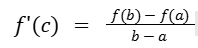
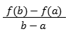

HOME
Learning Objectives
- Justify conclusions about functions by applying the Mean Value Theorem over an interval.
- If a function f is continuous over the interval [a, b] and differentiable over the interval (a, b), then the Mean Value Theorem guarantees a point within that open interval where the instantaneous rate of change equals the average rate of change over the interval.
Mean Value Theorem
Conditions
- f(x) must be continuous on the closed interval [a, b]
- f(x) must be differentiable on the open interval (a,b)
If the conditions are met:
The Mean Value Theorem guarantees that there is at least one value c on the interval (a, b) such that: 
- f'(c) represents the instantaneous rate of change (slope of the tangent line) at point c.
- represents the average rate of change over the interval [a,b] (slope of the secant line).
Rolle's Theorem
Rolle's Theorem is a specialized case of the Mean Value Theorem. There is one additional condition that needs to be met:
- The functions values at the endpoints must be equal, meaning f(a) = f(b).
This additional condition being met, while the other two are true, leads to the guarantee of the existence of a point c where the slope of the tangent line is zero, indicating a horizontal tangent.
Practice Problems (opens in a new tab)
Next Topic - Extreme Value Theorem